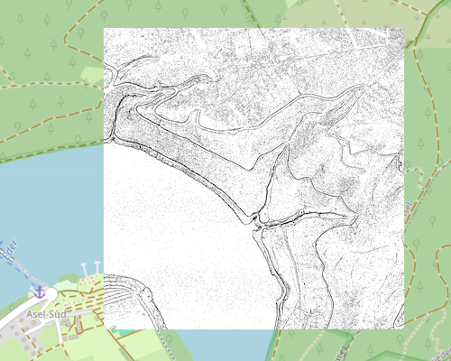
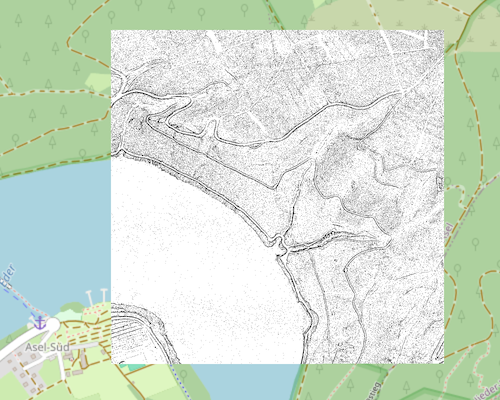

TPI - Topographic Position Index (Identifizierung von Geländeformen - Kuppe, Senke, Ebene)
Der Topographic Position Index (TPI) ist ein analytisches Werkzeug, das die relative Position eines Geländepunkts im Vergleich zu seiner unmittelbaren Umgebung quantifiziert. Er beantwortet die einfache Frage: Ist dieser Punkt eine Kuppe, eine Senke oder ein Teil eines gleichmäßigen Hanges? Ein positiver TPI-Wert markiert lokale Erhebungen (Kuppen/Grate), ein negativer Wert lokale Vertiefungen (Senken/Täler), und ein Wert nahe Null kennzeichnet ebene Flächen oder konstante Hänge. Diese Klassifizierung hilft dem Nutzer, die grundlegenden Geländeformen schnell zu identifizieren. In Verbindung mit hochauflösenden DGM1-Höhendaten ermöglicht der TPI sehr detaillierte Einblicke in kleinste morphologische Strukturen des Geländes. Zu den wichtigsten Anwendungsbereichen gehören:
- Analyse von Geländeformen (Kuppen, Senken, Grate): DGM1-basierte TPI-Werte sind ideal, um kleinräumige Geländeformen wie Erosionsrinnen, Mikro-Grate, Senken oder subtile Übergänge präzise abzugrenzen. Dies ist entscheidend für das Verständnis lokaler Erosions- und Akkumulationsprozesse.
- Ökologie und Habitatmodellierung: Die Topographie beeinflusst Mikroklima, Bodenfeuchte und Sonneneinstrahlung. Der TPI aus DGM1-Daten kann kleinräumige Habitate identifizieren, die für bestimmte Pflanzen- oder Tierarten aufgrund ihrer spezifischen Standortbedingungen wichtig sind, beispielsweise feuchte Senken oder exponierte Kuppen.
- Hydrologie und Erosionsmodellierung: Der TPI ermöglicht eine genaue Modellierung von Oberflächenabflusspfaden, Wasseransammlungsbereichen und potenziellen Erosionsursprüngen, indem er Senken und Grate identifiziert, die den Wasserfluss lenken oder aufhalten.
- Archäologie: Mit dem TPI aus DGM1-Daten können minimale, oft unter Vegetationsschichten verborgene, von Menschen geschaffene Reliefveränderungen wie alte Wege, Gräben, Fundamentreste oder Siedlungshügel sichtbar gemacht werden, die am Boden kaum noch zu erkennen sind.
- Land- und Forstwirtschaft: Die Identifizierung von Senken, in denen sich Wasser staut, oder Kuppen, die schneller austrocknen, kann die Planung von Entwässerungssystemen oder die standortgerechte Bewirtschaftung von Flächen optimieren.
Wichtig: Der TPI bewertet die relative Position eines Punktes im Verhältnis zu seinen direkten Nachbarn. Ein Punkt auf einem ansonsten flachen Plateau kann als "Kuppe" klassifiziert werden, wenn seine unmittelbare Umgebung leicht abfällt. Umgekehrt kann ein Punkt am Grund eines breiten Tals eine "Senke" sein, auch wenn das Tal insgesamt flach ist.
Berechnungsgrundlage (Differenz zum lokalen Mittelwert)
Der TPI wird berechnet, indem die Höhe eines zentralen Punkts von der mittleren Höhe seiner umgebenden Nachbarpunkte innerhalb eines definierten Fensters abgezogen wird. Für DGM1-Daten wird typischerweise ein Nahbereich mit einem 3x3-Meter-Fenster (entspricht 8 Nachbarzellen) verwendet. In diesem Fenster wird für einen Messpunkt ermittelt, ob er relativ zu seiner direkten Umgebung in einer Ebene, einer Senke oder auf einer Kuppe liegt.
Die Formel lautet:
TPI = Zc - Zmean
TPI-Algorithmus: TPI = Zc - Zmean, wobei Zc die Höhe des zentralen Punkts und Zmean die mittlere Höhe der umgebenden Nachbarpunkte ist.
Senke, Ebene, Kuppe
Bezogen auf die Genauigkeit der DGM1-Daten werden für die abgeleiteten TPI-Werte folgende Definitionen gewählt:
- Senken: kleiner -0.05 m
- Ebenen: -0.05 m bis 0.05 m
- Kuppen: größer 0.05 m
Typische Landschaften und deren TPI-Klassifizierung
| TPI-Bereich | Beschreibung | Charakteristika und Beispiele | Lage in Deutschland |
|---|---|---|---|
| < -0.05 | Senken / Täler |
Lokale Vertiefungen, Gräben, Erosionsrinnen, Talböden, Aushubbereiche, Tümpel. Bereiche, in denen sich Wasser sammeln oder abfließen kann.
Beispiele: Kleine Bachläufe, temporäre Wasseransammlungen in Ackerflächen, feuchte Wiesenmulden, Entwässerungsgräben. |
Spezifische Mikroformen in Flussauen (z.B. Elbtalaue), Moor- und Feuchtgebiete (z.B. Spreewald), Erosionsrinnen in landwirtschaftlich genutzten Hanglagen, Gewässernähe in Mittelgebirgstälern. |
| -0.05 bis 0.05 | Ebenen / konstante Hänge |
Relativ flache oder gleichmäßig geneigte Flächen ohne signifikante lokale Erhebungen oder Vertiefungen.
Beispiele: Große Ackerflächen, Sportplätze, Plateaus, sanfte Hangbereiche, breite Wege. |
Rheinebene, Münchner Schotterebene, große Teile Brandenburgs, Hochflächen der Schwäbischen und Fränkischen Alb, weite Ackerflächen in der Magdeburger Börde. |
| > 0.05 | Kuppen / Grate |
Lokale Erhebungen, Hügelkuppen, Grate, Böschungsoberkanten, Baumwurzeln, Felsköpfe. Bereiche, die von ihrer Umgebung abstehen.
Beispiele: Kleine Moränenhügel, Lesesteinhaufen, erhöhte Wegränder, Erosionsleisten an Hängen, Felsnasen, Baumstümpfe. |
Kleine Hügel und Erhebungen im norddeutschen Tiefland, Kuppen in Mittelgebirgsregionen (z.B. Harz, Eifel), exponierte Felsformationen (z.B. Sächsische Schweiz, Bayerische Alpen). |
Wertebereich zu Farbe
Aus den Höheninformationen werden TPI-Werte errechnet. Die Klassifizierung dieser Werte in "Senken", "Ebenen" und "Kuppen" ist der erste Schritt. Für die visuelle Darstellung zur Erkennung großflächiger Strukturen (z.B. lange Gräben oder Grate) empfiehlt sich eine einfache Schwarz-Weiß-Darstellung. Dabei kann entweder der Bereich der Senken oder der Bereich der Kuppen hervorgehoben werden, während die anderen Bereiche weiß dargestellt oder transparent gemacht werden, um eine Überforderung der visuellen Wahrnehmung zu vermeiden.
Welche Farben und Wertebereiche sinnvoll sind, ist vom jeweiligen Anwendungsfall und von der Geländebeschaffenheit des Untersuchungsgebiets abhängig. Es empfiehlt sich, die Verteilung der TPI-Werte (z. B. über ein Histogramm) zu analysieren, um eine passende Klassifizierung zu finden. Soll ein Wertebereich nicht dargestellt werden, wählt man eine volltransparente Farbe.
Beispiel für eine Farbsteuerdatei
| TPI | RGBA | Farbe | Farbname |
|---|---|---|---|
| -0.050001 | 0 0 0 255 |
|
Schwarz (Senke) |
| -0.05 | 255 255 255 255 |
|
Weiß (Ebene) |
| 0.05 | 255 255 255 255 |
|
Weiß (Ebene) |
| 0.050001 | 0 0 0 255 |
|
Schwarz (Kuppe) |
| nv | 0 0 0 0 |
|
Transparent |
Anmerkung: Die oben gezeigte Farbsteuerdatei generiert sowohl Senken als auch Kuppen in Schwarz, während Ebenen weiß dargestellt werden. Für eine bessere visuelle Bewertung sollten wahlweise die Senken oder die Kuppen durch Anpassung der Farbsteuerdatei ausgeblendet (transparent gemacht) werden, um die Darstellung zu vereinfachen und die Erkennung spezifischer Merkmale zu erleichtern.
TPI versus Schummerung
Topographic Position Index (TPI) (nur Senken) für eine Datenkachel am Edersee (Hessen).
Topographic Position Index (TPI) (nur Kuppen) für eine Datenkachel am Edersee (Hessen).
Der TPI bewertet die relative Geländeposition (ob ein Punkt höher, niedriger oder gleich seinen Nachbarn ist), während die Schummerung (Hillshade) die Ausleuchtung des Geländes aus einer bestimmten Lichtquelle simuliert und hauptsächlich die Hangneigung und -exposition visualisiert. Es gibt daher keinen direkten Zusammenhang zwischen den Abbildungen 'TPI' und 'Schummerung'. Die Abbildung der Schummerung dient einzig der Orientierung und der besseren topografischen Wahrnehmung des Reliefs.
Schummerung für eine Datenkachel am Edersee (Hessen).

Topographic Position Index (TPI) (Senken und Kuppen) für eine Datenkachel am Edersee (Hessen).
Dienst Kolorierung
Über den Dienst Kolorierung können Farbsteuerdateien definiert, eingelesen, editiert und gespeichert werden.